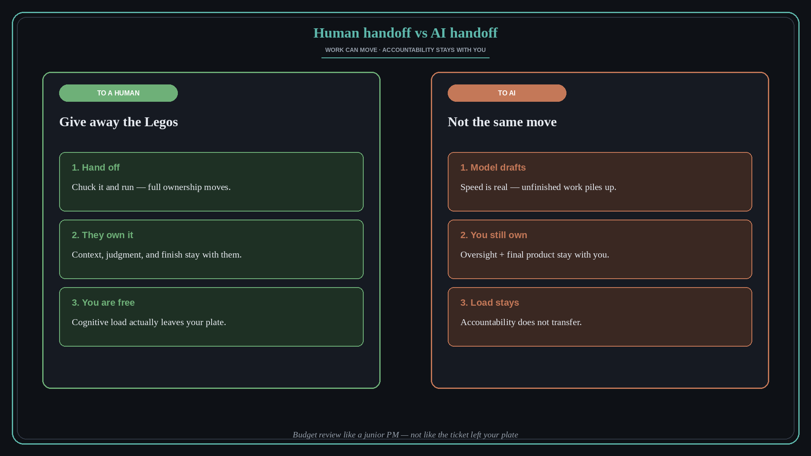

Delegating to AI is not giving your Legos away
Source: Molly Graham (@molly_g) via Lenny Rachitsky (@lennysan)
original post · podcast
What it claims
The original “give away your Legos” move assumed you could fully hand something off to a human and walk away. With AI you cannot. The robot does work, but oversight and the final product stay with you. Accountability does not transfer, so the cognitive load does not either.
Why it matters for a PO
Drafting specs, summarizing research, and spinning prototypes with agents feels like delegation. It is not. You still own the call, the edge cases, and the stakeholder story. Budget time for review the way you would for a junior PM — not as if the ticket left your plate.
3 takeaways
- Treat AI output as unfinished work that still needs a named owner (you).
- Plan review and correction capacity when you add agents — speed without oversight is fake capacity.
- Do not confuse “the model wrote it” with “someone else is accountable.”
Practice this week
Pick one AI-assisted deliverable. Write the owner line explicitly: who reviews, who decides ship/no-ship, and what “good” means before you accept the draft.